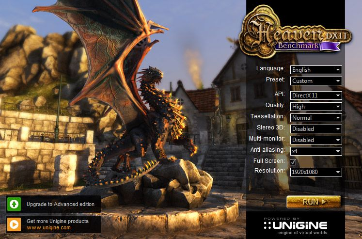

Testowanie i diagnozowanie sprzętu komputerowego, rozbudowa i unowocześnianie zestawu komputerowego.
Powinniśmy co jaki czas testować swój komputer w celu sprawdzenia czy np. nasz komputer sie nieprzegrzewa lub sprawdzić wydajność poszczególnych części które może będziemy musieli wymienić.
Do diagnozowania możemy ściągnąć nastepujące programy:
- CPU-Z pokazuje nam informacje o każdym elemencie naszego komputera i monituruje ich prace
- HWMonitor pokazuje nam temperature różnych elementów komputera dzieki czemu widzimy czy komputer sie nie przegrzewa
- GPU-Z pokazuje nam informacje o naszej karcie graficznej
- HAEVEN benchmark ten program testuje wydajność naszej karty graficznej
 (benchmark HEAVEN)
Na przeciągu kilku lat napewno wyjdą aktualizacje rożnych gier jak i programów co spowoduje że nas komputer będzie sobie radził z nimi coraz słabiej i będziemy musieli wymienić pewne jego komponenty. Jeśli zauważymy że tak sie dzieje powinniśmy sprawdzić za pomocą rożnych programów co potrzebuje wymiany lub rozbudowy. Najczęszczymi czynnościami jakie będziemy musieli wykonać mogą być:
- wyczyszczenie komputera za pomocą sprężonego powietrza
- dołożenie kolejnej kości pamięci RAM
- dokupienie drugiego dysku
- wymienić chłodzenie procesora na wydajniejszy lub dołożenie wentylatorów w obudowie
- po pewnym czasie żeby grać znowu w najnowsze gry będziemy musieli wymienić karte graficzna na bardziej wydajniejszą
- wymienić paste termoprzewodzącą